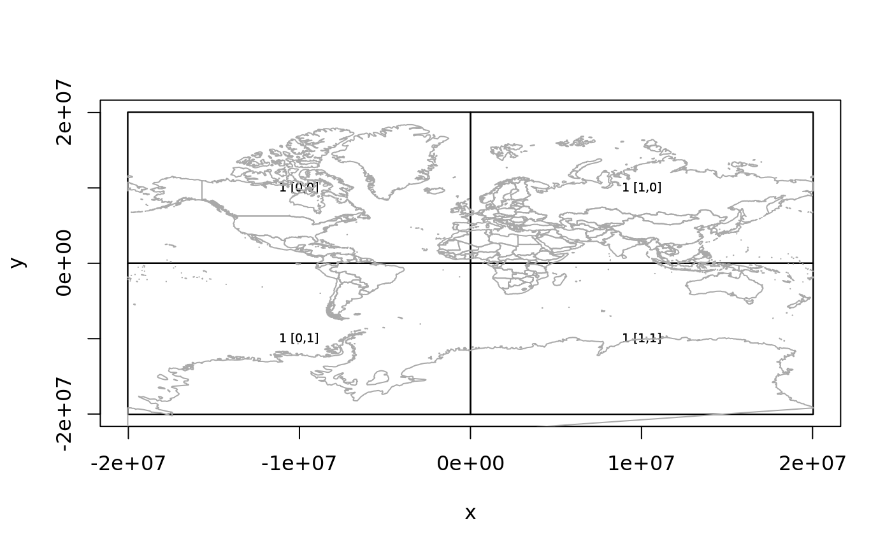

Create a new plot of tile rectangles, or add to an existing plot.
plot_tiles(x, ..., add = FALSE, label = TRUE, cex = 0.6, add_coast = TRUE, include_zoom = TRUE) tiles_to_polygon(x)
| x | tiles as create by |
|---|---|
| ... | arguments passed to |
| add | add to an existing plot? |
| label | include text label? |
| cex | relative size of text label if drawn (see |
| add_coast | include a basic coastline on the plot? |
| include_zoom | include zoom level with text label if drawn? |
The extent ('xmin', 'xmax', 'ymin', 'ymax') is used directly to draw the tiles so must be in the native Mercator coordinate system used by most tile servers.
if (!is.null(get_api_key())) { get_tiles_zoom(zoom = 1) tiles <- ceramic_tiles(zoom = 1) plot_tiles(tiles) }#> Preparing to download: 4 tiles at zoom = 1 from #> https://api.mapbox.com/v4/mapbox.satellite/